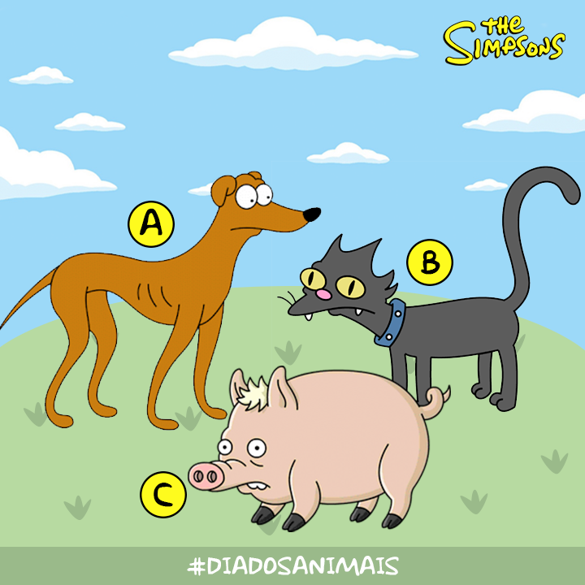

Esta comédia animada de enorme sucesso gira em torno da família de mesmo nome que mora na cidade de Springfield, em um estado americano sem nome. O pai, Homer Empregado de uma usina nuclear. A família inclui ainda a carinhosa mãe de cabelo azul Marge, o filho encrenqueiro Bart, a talentosa filha Lisa e a bebê Maggie
A Familia Simpson tem 2 animais de estimação, um cão e um gato. O gato SnowBall e pertence á Lisa o cão e o porco aranha, o cao é do Bart chama-se Santa's Little Helper ou em português , Ajudante do Pai Natal,e o porco do homer.
